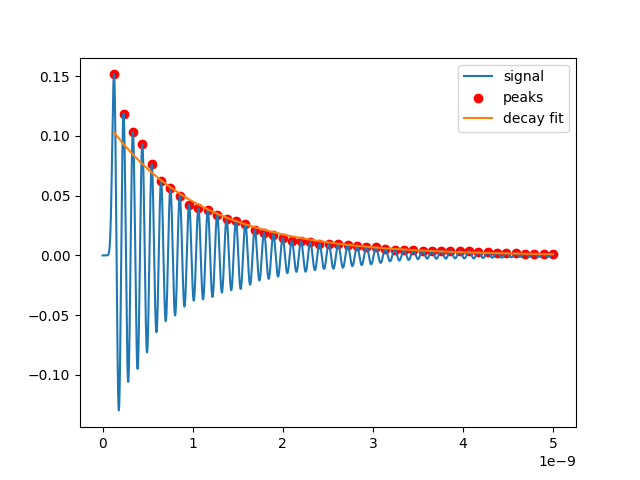
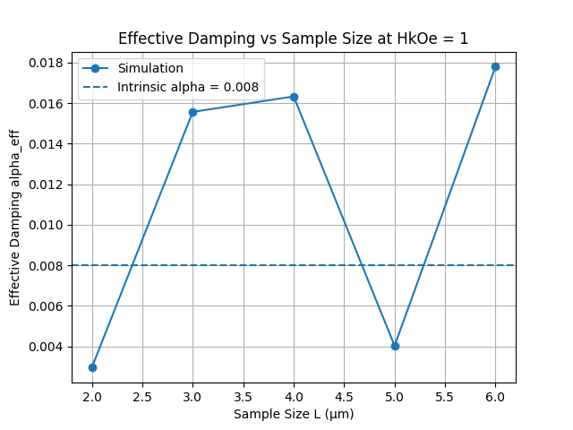

Micromagnetic Simulation of Magnetic Damping

Overview
Spin waves, or magnons, are one of the alternatives researchers are looking at for moving information without the usual flow of charge. That matters because ordinary current-based electronics dissipates energy as heat, and that problem only gets worse as devices shrink and circuit density goes up. A magnon avoids that by carrying information as a collective precession of magnetic moments instead of a stream of electrons. The catch is that this only works if the wave can travel far enough to be useful before it damps out — so damping isn't just a side detail, it's the thing that decides whether the idea is practical at all. I built this project to dig into that directly: GPU-accelerated micromagnetic simulations that track how effective Gilbert damping (αeff) in a laterally confined ferromagnetic structure changes with external bias field and with device geometry.
- Built MuMax3 simulations of magnetization dynamics in confined ferromagnetic thin-film structures
- Extracted αeff, resonance frequency, and relaxation time from the time-domain magnetization data by fitting a damped-harmonic decay in Python
- Swept external bias field (1–40 kOe) at fixed geometry, then lateral size (2–6 µm) at fixed field, to pull apart field-driven damping from geometry-driven damping
- Checked the results against Song et al. (2016), the published study I was trying to reproduce and build on
Method
Each run starts with a laterally confined film initialized to uniform magnetization along x. I then kick it with a short Gaussian field pulse (~39 ps FWHM) along y, which sets off precession. The resulting My(t) response comes out as a damped oscillation, so I fit the peak envelope to an exponential decay to get the relaxation time τ, and pull the resonance frequency f out of the oscillation period. αeff then falls out of f and τ, and I compare it against the intrinsic damping I set in the simulation (α = 0.008).
Nx := 750
Ny := 750 // varied with sample size L
Nz := 1
dx := 4e-9
dy := 4e-9
dz := 10e-9
HkOe := 1.0 // varied with bias field sweep
SetGridSize(Nx, Ny, Nz)
SetCellSize(dx, dy, dz)
Msat = 8.6e5
Aex = 1.3e-11
alpha = 0.008
m = uniform(1, 0, 0)
Bbias := HkOe * 0.1
fwhm := 39e-12
sigma := fwhm / 2.35482
t0 := 100e-12
Bpulse0 := Bbias / 10.0
B_ext = vector(Bbias, 0, 0)
relax()
for t := 0.0; t <= 5e-9; t += 1e-12 {
pulse := Bpulse0 * exp(-((t-t0)*(t-t0))/(2.0*sigma*sigma))
B_ext = vector(Bbias, pulse, 0)
Run(1e-12)
}Results
Field dependence (L = 3 µm)

At the lowest field (H = 1 kOe), αeff comes out to about 0.0156 — almost double the intrinsic value. That tells me the system isn't behaving as one clean uniform mode at low bias; other spin-wave modes and dephasing effects are contributing extra apparent damping. Push the field up to 5–10 kOe and αeff drops to roughly 0.0087–0.0090, much closer to intrinsic. That matches what I'd expect: a stronger bias field suppresses the non-uniform mode content and forces the magnetization toward more uniform precession, so what I'm measuring gets closer to the real material parameter. At high field (20–40 kOe), αeff levels off just above intrinsic (≈0.010) instead of continuing to converge. I don't think that's a real physical effect — it's more likely a fitting-resolution limit, since the decay gets very fast and hard to fit cleanly at high frequency. It's also the one place where my results diverge from the smoother, monotonic trend in the reference paper.
Geometry dependence (H = 1 kOe)

Unlike the field sweep, the size dependence doesn't move in a straight line: αeff goes from about 0.003 at L = 2 µm up to about 0.018 at L = 6 µm, alternating low and high rather than trending smoothly. The reference paper also finds a geometry dependence at low field, but theirs stays in a narrow, mildly-sloped band — nothing like this swing. Looking at the fit data, the two lowest αeff points (L = 2 and L = 5 µm) both come from relaxation times 4–5× longer than their neighbors, which points to a poorly-constrained decay fit at those geometries rather than a real physical effect. I ran this project on a time-limited allocation on a supercomputing cluster I no longer have access to, so I haven't been able to go back and re-fit or re-run those cases with tighter constraints — that's the clearest next step if I pick this back up.
Simulation approach and results benchmarked against: H.-S. Song, K.-D. Lee, C.-Y. You, B.-G. Park, and J.-I. Hong, “Geometric size effect on the extrinsic Gilbert damping in laterally confined magnetic structures,” Journal of Magnetism and Magnetic Materials, vol. 406, pp. 129–133, 2016.